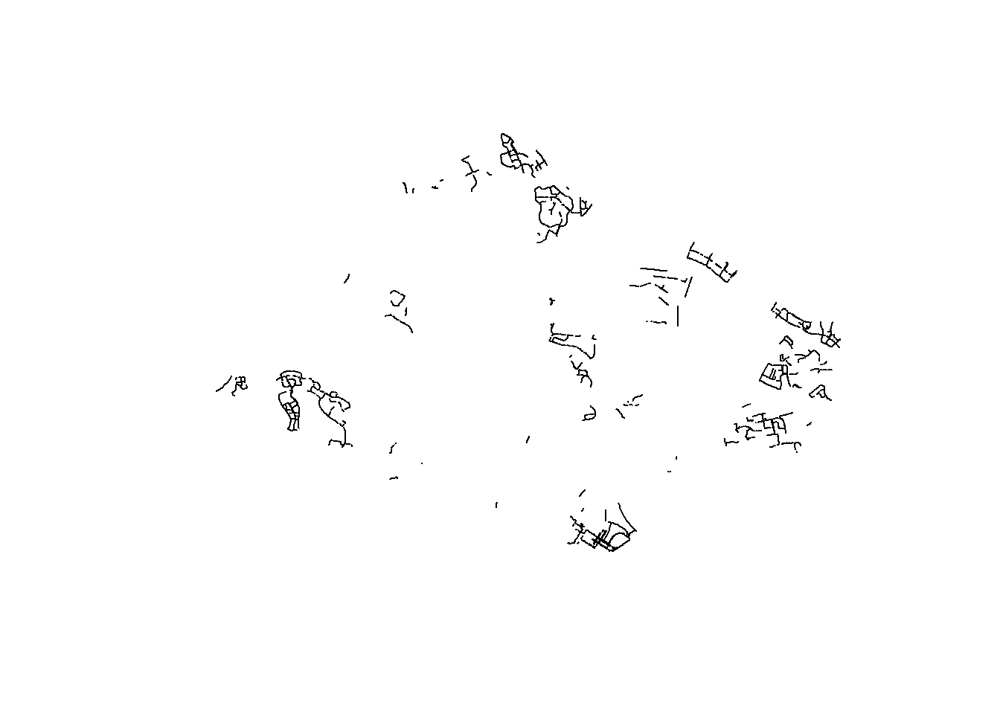
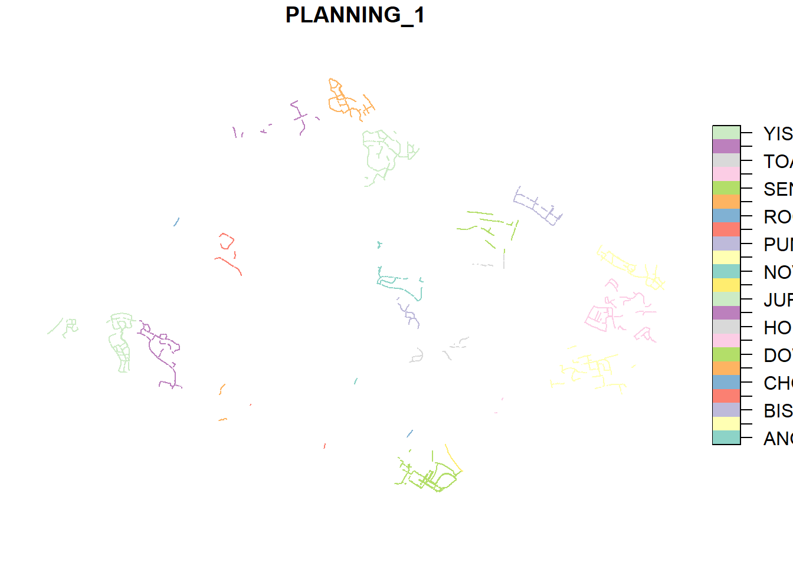
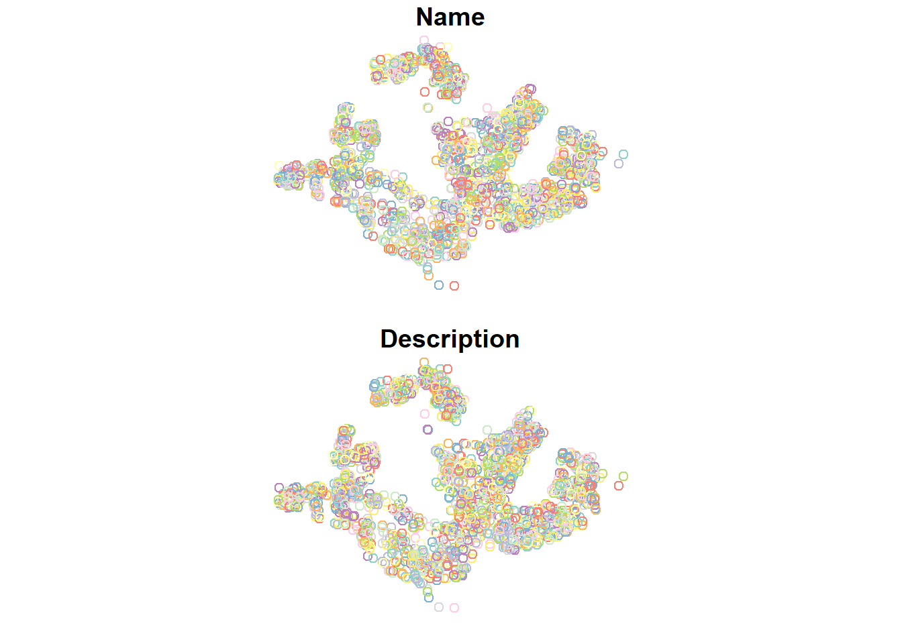
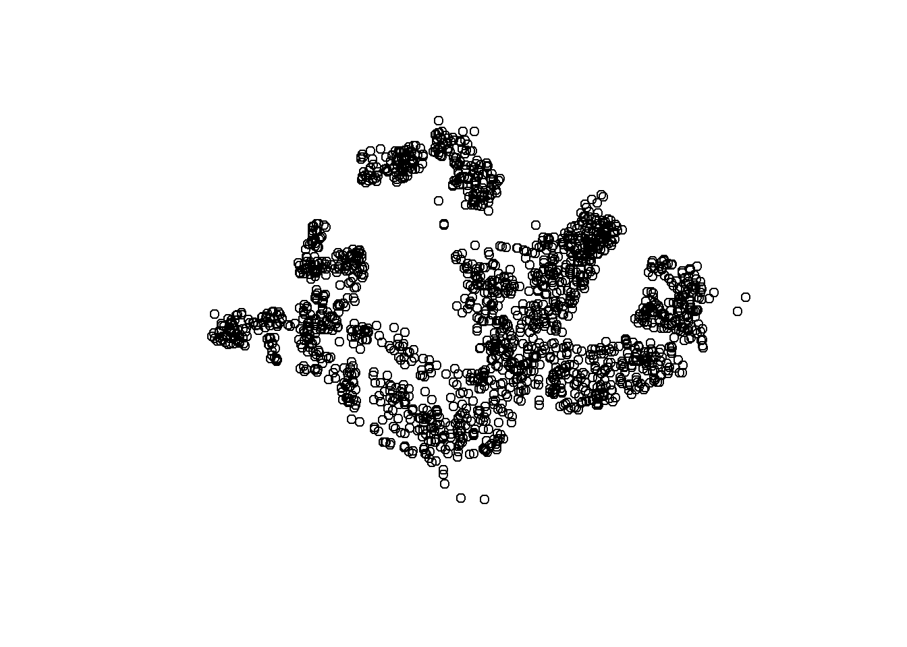

pacman::p_load(sf, tidyverse)Hands-on Exercise 1
1 Geospatial Data Wrangling with R
1.1 Overview
In this page, I show how I had completed the Hands-on Exercise 1. It includes the codes used, the graphs obtained as well as the insights gathered.
1.2 Data Acquisition
The following data sets were used in this hands-on exercise:
Cycling Path from LTADataMall
Latest version of Singapore AirBnB listing data from Inside Airbnb
The data sets were placed under two sub-folders: geospatial (Master Plan Subzone Boundary, Pre-Schools Location, and Cycling Path) and aspatial (AirBnB Listing). These two sub-folders are within the data folder of my Hands-on_Ex1 folder.
1.3 Getting Started
The two R packages used in this hands-on exercises were:
sf for importing, managing, and processing geospatial data, and
tidyverse for performing data science tasks such as importing, wrangling, and visualising data.
They were loaded into the R environment using the following code:
Student Note: This allowed for loading of multiple packages in one line of code.
1.4 Importing Geospatial Data
The st_read() (under sf package) was used to import the three geospatial data sets:
MP14_SUBZONE_WEB_PL, a polygon feature layer in ESRI shapefile format;CyclingPath, a line feature layer in ESRI shapefile format; andPreSchool, a point feature layer in kml file format.
1.4.1 Importing Polygon Feature Data in shapefile Format - Master Plan Subzone Boundary
The MP14_SUBZONE_WEB_PL data set was imported into R as a polygon feature data frame using st_read().
mpsz = st_read(dsn = "Hands-on_Ex1/data/geospatial",
layer = "MP14_SUBZONE_WEB_PL")Reading layer `MP14_SUBZONE_WEB_PL' from data source
`C:\jmphosis\ISSS624\Hands-on_Ex1\data\geospatial' using driver `ESRI Shapefile'
Simple feature collection with 323 features and 15 fields
Geometry type: MULTIPOLYGON
Dimension: XY
Bounding box: xmin: 2667.538 ymin: 15748.72 xmax: 56396.44 ymax: 50256.33
Projected CRS: SVY21Outcome:
Reading layer `MP14_SUBZONE_WEB_PL' from data source
`C:\jmphosis\ISSS624\Hands-on_Ex1\data\geospatial'
using driver `ESRI Shapefile'
Simple feature collection with 323 features and 15 fields
Geometry type: MULTIPOLYGON
Dimension: XY
Bounding box: xmin: 2667.538 ymin: 15748.72 xmax: 56396.44 ymax: 50256.33 Projected CRS: SVY21Student Note: The geospatial objects are multipolygon features. There are a total of 323 features and 15 fields in mpsz simple feature data frame. mpsz is in svy21 projected coordinate system. The bounding box provides the x extend and y extend of the data.
1.4.2 Importing Polyline Feature Data in shapefile Format - Cycling Path
The CyclingPath data set was imported into R as a line feature data frame using st_read().
cyclingpath = st_read(dsn = "Hands-on_Ex1/data/geospatial",
layer = "CyclingPathGazette")Reading layer `CyclingPathGazette' from data source
`C:\jmphosis\ISSS624\Hands-on_Ex1\data\geospatial' using driver `ESRI Shapefile'
Simple feature collection with 2558 features and 2 fields
Geometry type: MULTILINESTRING
Dimension: XY
Bounding box: xmin: 11854.32 ymin: 28347.98 xmax: 42626.09 ymax: 48948.15
Projected CRS: SVY21Outcome:
Reading layer `CyclingPathGazette' from data source
`C:\jmphosis\ISSS624\Hands-on_Ex1\data\geospatial'
using driver `ESRI Shapefile'
Simple feature collection with 2558 features and 2 fields
Geometry type: MULTILINESTRING
Dimension: XY
Bounding box: xmin: 11854.32 ymin: 28347.98 xmax: 42626.09 ymax: 48948.15 Projected CRS: SVY21Student Note: The geospatial objects are multistring features. There are a total of 2,558 features and 2 fields in cyclingpath linestring feature data frame. cyclingpath is in svy21 projected coordinate system.
1.4.3 Importing GIS Data in kml Format - Pre-Schools Location
The PreSchool data set was imported into R as a point feature data frame using st_read(). As it is in the kml format, the file extension is included.
preschool = st_read("Hands-on_Ex1/data/geospatial/PreSchoolsLocation.kml")Reading layer `PRESCHOOLS_LOCATION' from data source
`C:\jmphosis\ISSS624\Hands-on_Ex1\data\geospatial\PreSchoolsLocation.kml'
using driver `KML'
Simple feature collection with 2290 features and 2 fields
Geometry type: POINT
Dimension: XYZ
Bounding box: xmin: 103.6878 ymin: 1.247759 xmax: 103.9897 ymax: 1.462134
z_range: zmin: 0 zmax: 0
Geodetic CRS: WGS 84Outcome:
Reading layer `PRESCHOOLS_LOCATION' from data source
`C:\jmphosis\ISSS624\Hands-on_Ex1\data\geospatial\PreSchoolsLocation.kml'
using driver `KML'
Simple feature collection with 2290 features and 2 fields
Geometry type: POINT
Dimension: XYZ
Bounding box: xmin: 103.6878 ymin: 1.247759 xmax: 103.9897 ymax: 1.462134
z_range: zmin: 0 zmax: 0
Geodetic CRS: WGS 84Student Note: The geospatial objects are point features. There are a total of 2,290 features and 2 fields in preschool point feature data frame. preschool is in wgs84 coordinate system.
1.5 Checking the Content of A Simple Feature Data Frame
The following ways to retrieve information related to the content of a simple feature data frame were applied on the three data frames: mpsz, cyclingpath, and preschool:
st_geometry() (under sf package) retrieves the geometries from an object.
glimpse() (under dplyr package) retrieves information about the associated attributes in the data frame.
head() (under Base R) reveals complete information of a feature object.
1.5.1 Master Plan Subzone Boundary
The three functions were applied to mpsz:
st_geometry(mpsz)Geometry set for 323 features
Geometry type: MULTIPOLYGON
Dimension: XY
Bounding box: xmin: 2667.538 ymin: 15748.72 xmax: 56396.44 ymax: 50256.33
Projected CRS: SVY21
First 5 geometries:MULTIPOLYGON (((31495.56 30140.01, 31980.96 296...MULTIPOLYGON (((29092.28 30021.89, 29119.64 300...MULTIPOLYGON (((29932.33 29879.12, 29947.32 298...MULTIPOLYGON (((27131.28 30059.73, 27088.33 297...MULTIPOLYGON (((26451.03 30396.46, 26440.47 303...Outcome:
Geometry set for 323 features
Geometry type: MULTIPOLYGON
Dimension: XY
Bounding box: xmin: 2667.538 ymin: 15748.72 xmax: 56396.44 ymax: 50256.33 Projected CRS: SVY21
First 5 geometries:
MULTIPOLYGON (((31495.56 30140.01, 31980.96 296...
MULTIPOLYGON (((29092.28 30021.89, 29119.64 300...
MULTIPOLYGON (((29932.33 29879.12, 29947.32 298...
MULTIPOLYGON (((27131.28 30059.73, 27088.33 297...
MULTIPOLYGON (((26451.03 30396.46, 26440.47 303...Student Note: The above shows that mpsz is a multipolygon feature object and in the svy21 projected coordinates systems.
glimpse(mpsz)Rows: 323
Columns: 16
$ OBJECTID <int> 1, 2, 3, 4, 5, 6, 7, 8, 9, 10, 11, 12, 13, 14, 15, 16, 17, …
$ SUBZONE_NO <int> 1, 1, 3, 8, 3, 7, 9, 2, 13, 7, 12, 6, 1, 5, 1, 1, 3, 2, 2, …
$ SUBZONE_N <chr> "MARINA SOUTH", "PEARL'S HILL", "BOAT QUAY", "HENDERSON HIL…
$ SUBZONE_C <chr> "MSSZ01", "OTSZ01", "SRSZ03", "BMSZ08", "BMSZ03", "BMSZ07",…
$ CA_IND <chr> "Y", "Y", "Y", "N", "N", "N", "N", "Y", "N", "N", "N", "N",…
$ PLN_AREA_N <chr> "MARINA SOUTH", "OUTRAM", "SINGAPORE RIVER", "BUKIT MERAH",…
$ PLN_AREA_C <chr> "MS", "OT", "SR", "BM", "BM", "BM", "BM", "SR", "QT", "QT",…
$ REGION_N <chr> "CENTRAL REGION", "CENTRAL REGION", "CENTRAL REGION", "CENT…
$ REGION_C <chr> "CR", "CR", "CR", "CR", "CR", "CR", "CR", "CR", "CR", "CR",…
$ INC_CRC <chr> "5ED7EB253F99252E", "8C7149B9EB32EEFC", "C35FEFF02B13E0E5",…
$ FMEL_UPD_D <date> 2014-12-05, 2014-12-05, 2014-12-05, 2014-12-05, 2014-12-05…
$ X_ADDR <dbl> 31595.84, 28679.06, 29654.96, 26782.83, 26201.96, 25358.82,…
$ Y_ADDR <dbl> 29220.19, 29782.05, 29974.66, 29933.77, 30005.70, 29991.38,…
$ SHAPE_Leng <dbl> 5267.381, 3506.107, 1740.926, 3313.625, 2825.594, 4428.913,…
$ SHAPE_Area <dbl> 1630379.27, 559816.25, 160807.50, 595428.89, 387429.44, 103…
$ geometry <MULTIPOLYGON [m]> MULTIPOLYGON (((31495.56 30..., MULTIPOLYGON (…Outcome:
Rows: 323
Columns: 16
$ OBJECTID <int> 1, 2, 3, 4, 5, 6, 7, 8, 9, 10, 11, 12…
$ SUBZONE_NO <int> 1, 1, 3, 8, 3, 7, 9, 2, 13, 7, 12, 6,…
$ SUBZONE_N <chr> "MARINA SOUTH", "PEARL'S HILL", "BOAT…
$ SUBZONE_C <chr> "MSSZ01", "OTSZ01", "SRSZ03", "BMSZ08…
$ CA_IND <chr> "Y", "Y", "Y", "N", "N", "N", "N", "Y…
$ PLN_AREA_N <chr> "MARINA SOUTH", "OUTRAM", "SINGAPORE …
$ PLN_AREA_C <chr> "MS", "OT", "SR", "BM", "BM", "BM", "…
$ REGION_N <chr> "CENTRAL REGION", "CENTRAL REGION", "…
$ REGION_C <chr> "CR", "CR", "CR", "CR", "CR", "CR", "…
$ INC_CRC <chr> "5ED7EB253F99252E", "8C7149B9EB32EEFC…
$ FMEL_UPD_D <date> 2014-12-05, 2014-12-05, 2014-12-05, …
$ X_ADDR <dbl> 31595.84, 28679.06, 29654.96, 26782.8…
$ Y_ADDR <dbl> 29220.19, 29782.05, 29974.66, 29933.7…
$ SHAPE_Leng <dbl> 5267.381, 3506.107, 1740.926, 3313.62…
$ SHAPE_Area <dbl> 1630379.3, 559816.2, 160807.5, 595428…
$ geometry <MULTIPOLYGON [m]> MULTIPOLYGON (((31495.56…Student Note: The above shows the data type of each field and some examples of the values.
head(mpsz, n=5)Simple feature collection with 5 features and 15 fields
Geometry type: MULTIPOLYGON
Dimension: XY
Bounding box: xmin: 25867.68 ymin: 28369.47 xmax: 32362.39 ymax: 30435.54
Projected CRS: SVY21
OBJECTID SUBZONE_NO SUBZONE_N SUBZONE_C CA_IND PLN_AREA_N
1 1 1 MARINA SOUTH MSSZ01 Y MARINA SOUTH
2 2 1 PEARL'S HILL OTSZ01 Y OUTRAM
3 3 3 BOAT QUAY SRSZ03 Y SINGAPORE RIVER
4 4 8 HENDERSON HILL BMSZ08 N BUKIT MERAH
5 5 3 REDHILL BMSZ03 N BUKIT MERAH
PLN_AREA_C REGION_N REGION_C INC_CRC FMEL_UPD_D X_ADDR
1 MS CENTRAL REGION CR 5ED7EB253F99252E 2014-12-05 31595.84
2 OT CENTRAL REGION CR 8C7149B9EB32EEFC 2014-12-05 28679.06
3 SR CENTRAL REGION CR C35FEFF02B13E0E5 2014-12-05 29654.96
4 BM CENTRAL REGION CR 3775D82C5DDBEFBD 2014-12-05 26782.83
5 BM CENTRAL REGION CR 85D9ABEF0A40678F 2014-12-05 26201.96
Y_ADDR SHAPE_Leng SHAPE_Area geometry
1 29220.19 5267.381 1630379.3 MULTIPOLYGON (((31495.56 30...
2 29782.05 3506.107 559816.2 MULTIPOLYGON (((29092.28 30...
3 29974.66 1740.926 160807.5 MULTIPOLYGON (((29932.33 29...
4 29933.77 3313.625 595428.9 MULTIPOLYGON (((27131.28 30...
5 30005.70 2825.594 387429.4 MULTIPOLYGON (((26451.03 30...Outcome:
Simple feature collection with 5 features and 15 fields
Geometry type: MULTIPOLYGON
Dimension: XY
Bounding box: xmin: 25867.68 ymin: 28369.47 xmax: 32362.39 ymax: 30435.54 Projected CRS: SVY21
OBJECTID SUBZONE_NO SUBZONE_N SUBZONE_C CA_IND
1 1 1 MARINA SOUTH MSSZ01 Y
2 2 1 PEARL'S HILL OTSZ01 Y
3 3 3 BOAT QUAY SRSZ03 Y
4 4 8 HENDERSON HILL BMSZ08 N
5 5 3 REDHILL BMSZ03 N
PLN_AREA_N PLN_AREA_C REGION_N REGION_C
1 MARINA SOUTH MS CENTRAL REGION CR
2 OUTRAM OT CENTRAL REGION CR
3 SINGAPORE RIVER SR CENTRAL REGION CR
4 BUKIT MERAH BM CENTRAL REGION CR
5 BUKIT MERAH BM CENTRAL REGION CR
INC_CRC FMEL_UPD_D X_ADDR Y_ADDR
1 5ED7EB253F99252E 2014-12-05 31595.84 29220.19
2 8C7149B9EB32EEFC 2014-12-05 28679.06 29782.05
3 C35FEFF02B13E0E5 2014-12-05 29654.96 29974.66
4 3775D82C5DDBEFBD 2014-12-05 26782.83 29933.77
5 85D9ABEF0A40678F 2014-12-05 26201.96 30005.70
SHAPE_Leng SHAPE_Area geometry
1 5267.381 1630379.3 MULTIPOLYGON (((31495.56 30...
2 3506.107 559816.2 MULTIPOLYGON (((29092.28 30...
3 1740.926 160807.5 MULTIPOLYGON (((29932.33 29...
4 3313.625 595428.9 MULTIPOLYGON (((27131.28 30...
5 2825.594 387429.4 MULTIPOLYGON (((26451.03 30...Student Note: The above shows the first 5 records in mpsz.
1.5.2 Cycling Path
The three functions were applied to cyclingpath:
st_geometry(cyclingpath)Geometry set for 2558 features
Geometry type: MULTILINESTRING
Dimension: XY
Bounding box: xmin: 11854.32 ymin: 28347.98 xmax: 42626.09 ymax: 48948.15
Projected CRS: SVY21
First 5 geometries:MULTILINESTRING ((39782.85 34832.11, 39799.44 3...MULTILINESTRING ((39931.51 35100.96, 39827.86 3...MULTILINESTRING ((40031.89 35124.94, 39977.14 3...MULTILINESTRING ((39958.38 37075.99, 40010.3 37...MULTILINESTRING ((39652.87 36751.62, 39648.35 3...Outcome:
Geometry set for 2558 features
Geometry type: MULTILINESTRING
Dimension: XY
Bounding box: xmin: 11854.32 ymin: 28347.98 xmax: 42626.09 ymax: 48948.15
Projected CRS: SVY21
First 5 geometries:
MULTILINESTRING ((39782.85 34832.11, 39799.44 3...
MULTILINESTRING ((39931.51 35100.96, 39827.86 3...
MULTILINESTRING ((40031.89 35124.94, 39977.14 3...
MULTILINESTRING ((39958.38 37075.99, 40010.3 37...
MULTILINESTRING ((39652.87 36751.62, 39648.35 3...Student Note: The above shows that cyclingpath is a multilinestring feature object and in the svy21 projected coordinates systems.
glimpse(cyclingpath)Rows: 2,558
Columns: 3
$ PLANNING_A <chr> NA, NA, NA, NA, NA, NA, NA, NA, NA, NA, NA, NA, NA, NA, NA,…
$ PLANNING_1 <chr> "BEDOK", "BEDOK", "BEDOK", "TAMPINES", "TAMPINES", "TAMPINE…
$ geometry <MULTILINESTRING [m]> MULTILINESTRING ((39782.85 ..., MULTILINEST…Outcome:
Rows: 2,558
Columns: 3
$ PLANNING_A <chr> NA, NA, NA, NA, NA, NA, NA, NA, NA, NA, NA, NA, NA, NA, NA, NA, NA, NA, NA, NA, NA, NA, NA, NA, NA,…
$ PLANNING_1 <chr> "BEDOK", "BEDOK", "BEDOK", "TAMPINES", "TAMPINES", "TAMPINES", "TAMPINES", "TAMPINES", "YISHUN", "T…
$ geometry <MULTILINESTRING [m]> MULTILINESTRING ((39782.85 ..., MULTILINESTRING ((39931.51 ..., MULTILINESTRING ((4…Student Note: The above shows the data type of each field and some examples of the values. The PLANNING_A column appears to only have ‘NA’ values.
head(cyclingpath, n=5)Simple feature collection with 5 features and 2 fields
Geometry type: MULTILINESTRING
Dimension: XY
Bounding box: xmin: 39598.41 ymin: 34811.14 xmax: 40031.89 ymax: 37075.99
Projected CRS: SVY21
PLANNING_A PLANNING_1 geometry
1 <NA> BEDOK MULTILINESTRING ((39782.85 ...
2 <NA> BEDOK MULTILINESTRING ((39931.51 ...
3 <NA> BEDOK MULTILINESTRING ((40031.89 ...
4 <NA> TAMPINES MULTILINESTRING ((39958.38 ...
5 <NA> TAMPINES MULTILINESTRING ((39652.87 ...Outcome:
Simple feature collection with 5 features and 2 fields
Geometry type: MULTILINESTRING
Dimension: XY
Bounding box: xmin: 39598.41 ymin: 34811.14 xmax: 40031.89 ymax: 37075.99
Projected CRS: SVY21
PLANNING_A PLANNING_1 geometry
1 <NA> BEDOK MULTILINESTRING ((39782.85 ...
2 <NA> BEDOK MULTILINESTRING ((39931.51 ...
3 <NA> BEDOK MULTILINESTRING ((40031.89 ...
4 <NA> TAMPINES MULTILINESTRING ((39958.38 ...
5 <NA> TAMPINES MULTILINESTRING ((39652.87 ...Student Note: The above shows the first 5 records in cyclingpath.
1.5.3 Pre-Schools Location
The three functions were applied to preschool:
st_geometry(preschool)Geometry set for 2290 features
Geometry type: POINT
Dimension: XYZ
Bounding box: xmin: 103.6878 ymin: 1.247759 xmax: 103.9897 ymax: 1.462134
z_range: zmin: 0 zmax: 0
Geodetic CRS: WGS 84
First 5 geometries:POINT Z (103.8072 1.299333 0)POINT Z (103.826 1.312839 0)POINT Z (103.8409 1.348843 0)POINT Z (103.8048 1.435024 0)POINT Z (103.839 1.33315 0)Outcome:
Geometry set for 2290 features
Geometry type: POINT
Dimension: XYZ
Bounding box: xmin: 103.6878 ymin: 1.247759 xmax: 103.9897 ymax: 1.462134
z_range: zmin: 0 zmax: 0
Geodetic CRS: WGS 84
First 5 geometries:
POINT Z (103.8072 1.299333 0)
POINT Z (103.826 1.312839 0)
POINT Z (103.8409 1.348843 0)
POINT Z (103.8048 1.435024 0)
POINT Z (103.839 1.33315 0)Student Note: The above shows that preschool is a point feature object and in the wgs84 coordinates systems.
glimpse(preschool)Rows: 2,290
Columns: 3
$ Name <chr> "kml_1", "kml_2", "kml_3", "kml_4", "kml_5", "kml_6", "kml…
$ Description <chr> "<center><table><tr><th colspan='2' align='center'><em>Att…
$ geometry <POINT [°]> POINT Z (103.8072 1.299333 0), POINT Z (103.826 1.31…Outcome:
Rows: 2,290
Columns: 3
$ Name <chr> "kml_1", "kml_2", "kml_3", "kml_4", "kml_5", "kml_6", "kml_7", "kml_8", "kml_9", "kml_10", "kml_11…
$ Description <chr> "<center><table><tr><th colspan='2' align='center'><em>Attributes</em></th></tr><tr bgcolor=\"#E3E…
$ geometry <POINT [°]> POINT Z (103.8072 1.299333 0), POINT Z (103.826 1.312839 0), POINT Z (103.8409 1.348843 0), …Student Note: The above shows the data type of each field and some examples of the values.
head(preschool, n=5)Simple feature collection with 5 features and 2 fields
Geometry type: POINT
Dimension: XYZ
Bounding box: xmin: 103.8048 ymin: 1.299333 xmax: 103.8409 ymax: 1.435024
z_range: zmin: 0 zmax: 0
Geodetic CRS: WGS 84
Name
1 kml_1
2 kml_2
3 kml_3
4 kml_4
5 kml_5
Description
1 <center><table><tr><th colspan='2' align='center'><em>Attributes</em></th></tr><tr bgcolor="#E3E3F3"> <th>CENTRE_NAME</th> <td>CHILDREN'S COVE PRESCHOOL PTE.LTD.</td> </tr><tr bgcolor=""> <th>CENTRE_CODE</th> <td>PT9390</td> </tr><tr bgcolor="#E3E3F3"> <th>INC_CRC</th> <td>498CC9FE48CC94D4</td> </tr><tr bgcolor=""> <th>FMEL_UPD_D</th> <td>20211201093631</td> </tr></table></center>
2 <center><table><tr><th colspan='2' align='center'><em>Attributes</em></th></tr><tr bgcolor="#E3E3F3"> <th>CENTRE_NAME</th> <td>CHILDREN'S COVE PTE. LTD.</td> </tr><tr bgcolor=""> <th>CENTRE_CODE</th> <td>PT8675</td> </tr><tr bgcolor="#E3E3F3"> <th>INC_CRC</th> <td>22877550804213FD</td> </tr><tr bgcolor=""> <th>FMEL_UPD_D</th> <td>20211201093631</td> </tr></table></center>
3 <center><table><tr><th colspan='2' align='center'><em>Attributes</em></th></tr><tr bgcolor="#E3E3F3"> <th>CENTRE_NAME</th> <td>CHILDREN'S VINEYARD PRESCHOOL PTE. LTD</td> </tr><tr bgcolor=""> <th>CENTRE_CODE</th> <td>PT9308</td> </tr><tr bgcolor="#E3E3F3"> <th>INC_CRC</th> <td>B2FE90E44AD494E3</td> </tr><tr bgcolor=""> <th>FMEL_UPD_D</th> <td>20211201093631</td> </tr></table></center>
4 <center><table><tr><th colspan='2' align='center'><em>Attributes</em></th></tr><tr bgcolor="#E3E3F3"> <th>CENTRE_NAME</th> <td>CHILDTIME CARE & DEVELOPMENT CENTRE PTE.LTD.</td> </tr><tr bgcolor=""> <th>CENTRE_CODE</th> <td>PT9122</td> </tr><tr bgcolor="#E3E3F3"> <th>INC_CRC</th> <td>1384CDC0D14B76A1</td> </tr><tr bgcolor=""> <th>FMEL_UPD_D</th> <td>20211201093631</td> </tr></table></center>
5 <center><table><tr><th colspan='2' align='center'><em>Attributes</em></th></tr><tr bgcolor="#E3E3F3"> <th>CENTRE_NAME</th> <td>CHILTERN HOUSE</td> </tr><tr bgcolor=""> <th>CENTRE_CODE</th> <td>PT2070</td> </tr><tr bgcolor="#E3E3F3"> <th>INC_CRC</th> <td>FB24EAA6E73B2723</td> </tr><tr bgcolor=""> <th>FMEL_UPD_D</th> <td>20211201093631</td> </tr></table></center>
geometry
1 POINT Z (103.8072 1.299333 0)
2 POINT Z (103.826 1.312839 0)
3 POINT Z (103.8409 1.348843 0)
4 POINT Z (103.8048 1.435024 0)
5 POINT Z (103.839 1.33315 0)Outcome:
Simple feature collection with 5 features and 2 fields
Geometry type: POINT
Dimension: XYZ
Bounding box: xmin: 103.8048 ymin: 1.299333 xmax: 103.8409 ymax: 1.435024
z_range: zmin: 0 zmax: 0
Geodetic CRS: WGS 84
Name
1 kml_1
2 kml_2
3 kml_3
4 kml_4
5 kml_5
Description
1 <center><table><tr><th colspan='2' align='center'><em>Attributes</em></th></tr><tr bgcolor="#E3E3F3"> <th>CENTRE_NAME</th> <td>CHILDREN'S COVE PRESCHOOL PTE.LTD.</td> </tr><tr bgcolor=""> <th>CENTRE_CODE</th> <td>PT9390</td> </tr><tr bgcolor="#E3E3F3"> <th>INC_CRC</th> <td>498CC9FE48CC94D4</td> </tr><tr bgcolor=""> <th>FMEL_UPD_D</th> <td>20211201093631</td> </tr></table></center>
2 <center><table><tr><th colspan='2' align='center'><em>Attributes</em></th></tr><tr bgcolor="#E3E3F3"> <th>CENTRE_NAME</th> <td>CHILDREN'S COVE PTE. LTD.</td> </tr><tr bgcolor=""> <th>CENTRE_CODE</th> <td>PT8675</td> </tr><tr bgcolor="#E3E3F3"> <th>INC_CRC</th> <td>22877550804213FD</td> </tr><tr bgcolor=""> <th>FMEL_UPD_D</th> <td>20211201093631</td> </tr></table></center>
3 <center><table><tr><th colspan='2' align='center'><em>Attributes</em></th></tr><tr bgcolor="#E3E3F3"> <th>CENTRE_NAME</th> <td>CHILDREN'S VINEYARD PRESCHOOL PTE. LTD</td> </tr><tr bgcolor=""> <th>CENTRE_CODE</th> <td>PT9308</td> </tr><tr bgcolor="#E3E3F3"> <th>INC_CRC</th> <td>B2FE90E44AD494E3</td> </tr><tr bgcolor=""> <th>FMEL_UPD_D</th> <td>20211201093631</td> </tr></table></center>
4 <center><table><tr><th colspan='2' align='center'><em>Attributes</em></th></tr><tr bgcolor="#E3E3F3"> <th>CENTRE_NAME</th> <td>CHILDTIME CARE & DEVELOPMENT CENTRE PTE.LTD.</td> </tr><tr bgcolor=""> <th>CENTRE_CODE</th> <td>PT9122</td> </tr><tr bgcolor="#E3E3F3"> <th>INC_CRC</th> <td>1384CDC0D14B76A1</td> </tr><tr bgcolor=""> <th>FMEL_UPD_D</th> <td>20211201093631</td> </tr></table></center>
5 <center><table><tr><th colspan='2' align='center'><em>Attributes</em></th></tr><tr bgcolor="#E3E3F3"> <th>CENTRE_NAME</th> <td>CHILTERN HOUSE</td> </tr><tr bgcolor=""> <th>CENTRE_CODE</th> <td>PT2070</td> </tr><tr bgcolor="#E3E3F3"> <th>INC_CRC</th> <td>FB24EAA6E73B2723</td> </tr><tr bgcolor=""> <th>FMEL_UPD_D</th> <td>20211201093631</td> </tr></table></center>
geometry
1 POINT Z (103.8072 1.299333 0)
2 POINT Z (103.826 1.312839 0)
3 POINT Z (103.8409 1.348843 0)
4 POINT Z (103.8048 1.435024 0)
5 POINT Z (103.839 1.33315 0)Student Note: The above shows the first 5 records in preschool.
1.6 Plotting the Geospatial Data
The plot() (under R graphics) was used to visualise the geospatial features of the three data frames: mpsz, cyclingpath, and preschool.
1.6.1 Master Plan Subzone Boundary
plot(mpsz)Warning: plotting the first 9 out of 15 attributes; use max.plot = 15 to plot
all
plot(st_geometry(mpsz))
plot(mpsz["PLN_AREA_N"])
1.6.2 Cycling Path
plot(st_geometry(cyclingpath))
plot(cyclingpath["PLANNING_1"])
1.6.3 Pre-Schools Location
plot(preschool)
plot(st_geometry(preschool))
1.7 Working with Projection
It is essential for two geospatial data objects to be projected using similar coordinate systems. In the hands-on exercise, we projected a simple feature data frame from one coordinate system to another through projection transformation.
1.7.1 Assigning EPSG Code to A Simple Feature Data Frame
st_crs(mpsz)Coordinate Reference System:
User input: SVY21
wkt:
PROJCRS["SVY21",
BASEGEOGCRS["SVY21[WGS84]",
DATUM["World Geodetic System 1984",
ELLIPSOID["WGS 84",6378137,298.257223563,
LENGTHUNIT["metre",1]],
ID["EPSG",6326]],
PRIMEM["Greenwich",0,
ANGLEUNIT["Degree",0.0174532925199433]]],
CONVERSION["unnamed",
METHOD["Transverse Mercator",
ID["EPSG",9807]],
PARAMETER["Latitude of natural origin",1.36666666666667,
ANGLEUNIT["Degree",0.0174532925199433],
ID["EPSG",8801]],
PARAMETER["Longitude of natural origin",103.833333333333,
ANGLEUNIT["Degree",0.0174532925199433],
ID["EPSG",8802]],
PARAMETER["Scale factor at natural origin",1,
SCALEUNIT["unity",1],
ID["EPSG",8805]],
PARAMETER["False easting",28001.642,
LENGTHUNIT["metre",1],
ID["EPSG",8806]],
PARAMETER["False northing",38744.572,
LENGTHUNIT["metre",1],
ID["EPSG",8807]]],
CS[Cartesian,2],
AXIS["(E)",east,
ORDER[1],
LENGTHUNIT["metre",1,
ID["EPSG",9001]]],
AXIS["(N)",north,
ORDER[2],
LENGTHUNIT["metre",1,
ID["EPSG",9001]]]]Coordinate Reference System:
User input: SVY21
wkt:
PROJCRS["SVY21",
BASEGEOGCRS["SVY21[WGS84]",
DATUM["World Geodetic System 1984",
ELLIPSOID["WGS 84",6378137,298.257223563,
LENGTHUNIT["metre",1]],
ID["EPSG",6326]],
PRIMEM["Greenwich",0,
ANGLEUNIT["Degree",0.0174532925199433]]],
CONVERSION["unnamed",
METHOD["Transverse Mercator",
ID["EPSG",9807]],
PARAMETER["Latitude of natural origin",1.36666666666667,
ANGLEUNIT["Degree",0.0174532925199433],
ID["EPSG",8801]],
PARAMETER["Longitude of natural origin",103.833333333333,
ANGLEUNIT["Degree",0.0174532925199433],
ID["EPSG",8802]],
PARAMETER["Scale factor at natural origin",1,
SCALEUNIT["unity",1],
ID["EPSG",8805]],
PARAMETER["False easting",28001.642,
LENGTHUNIT["metre",1],
ID["EPSG",8806]],
PARAMETER["False northing",38744.572,
LENGTHUNIT["metre",1],
ID["EPSG",8807]]],
CS[Cartesian,2],
AXIS["(E)",east,
ORDER[1],
LENGTHUNIT["metre",1,
ID["EPSG",9001]]],
AXIS["(N)",north
ORDER[2],
LENGTHUNIT["metre",1,
ID["EPSG",9001]]]]The above shows that the mpsz data frame has the wrong EPSG code (9001). Hence, the st_set_crs() (under sf package) is used to assign the correct EPSG code (3414).
mpsz3414 = st_set_crs(mpsz, 3414)Warning: st_crs<- : replacing crs does not reproject data; use st_transform for
thatst_crs(mpsz3414)Coordinate Reference System:
User input: EPSG:3414
wkt:
PROJCRS["SVY21 / Singapore TM",
BASEGEOGCRS["SVY21",
DATUM["SVY21",
ELLIPSOID["WGS 84",6378137,298.257223563,
LENGTHUNIT["metre",1]]],
PRIMEM["Greenwich",0,
ANGLEUNIT["degree",0.0174532925199433]],
ID["EPSG",4757]],
CONVERSION["Singapore Transverse Mercator",
METHOD["Transverse Mercator",
ID["EPSG",9807]],
PARAMETER["Latitude of natural origin",1.36666666666667,
ANGLEUNIT["degree",0.0174532925199433],
ID["EPSG",8801]],
PARAMETER["Longitude of natural origin",103.833333333333,
ANGLEUNIT["degree",0.0174532925199433],
ID["EPSG",8802]],
PARAMETER["Scale factor at natural origin",1,
SCALEUNIT["unity",1],
ID["EPSG",8805]],
PARAMETER["False easting",28001.642,
LENGTHUNIT["metre",1],
ID["EPSG",8806]],
PARAMETER["False northing",38744.572,
LENGTHUNIT["metre",1],
ID["EPSG",8807]]],
CS[Cartesian,2],
AXIS["northing (N)",north,
ORDER[1],
LENGTHUNIT["metre",1]],
AXIS["easting (E)",east,
ORDER[2],
LENGTHUNIT["metre",1]],
USAGE[
SCOPE["Cadastre, engineering survey, topographic mapping."],
AREA["Singapore - onshore and offshore."],
BBOX[1.13,103.59,1.47,104.07]],
ID["EPSG",3414]]Coordinate Reference System:
User input: EPSG:3414
wkt:
PROJCRS["SVY21 / Singapore TM",
BASEGEOGCRS["SVY21",
DATUM["SVY21",
ELLIPSOID["WGS 84",6378137,298.257223563,
LENGTHUNIT["metre",1]]],
PRIMEM["Greenwich",0,
ANGLEUNIT["degree",0.0174532925199433]],
ID["EPSG",4757]],
CONVERSION["Singapore Transverse Mercator",
METHOD["Transverse Mercator",
ID["EPSG",9807]],
PARAMETER["Latitude of natural origin",1.36666666666667,
ANGLEUNIT["degree",0.0174532925199433],
ID["EPSG",8801]],
PARAMETER["Longitude of natural origin",103.833333333333,
ANGLEUNIT["degree",0.0174532925199433],
ID["EPSG",8802]],
PARAMETER["Scale factor at natural origin",1,
SCALEUNIT["unity",1],
ID["EPSG",8805]],
PARAMETER["False easting",28001.642,
LENGTHUNIT["metre",1],
ID["EPSG",8806]],
PARAMETER["False northing",38744.572,
LENGTHUNIT["metre",1],
ID["EPSG",8807]]],
CS[Cartesian,2],
AXIS["northing (N)",north,
ORDER[1],
LENGTHUNIT["metre",1]],
AXIS["easting (E)",east,
ORDER[2],
LENGTHUNIT["metre",1]],
USAGE[
SCOPE["Cadastre, engineering survey, topographic mapping."],
AREA["Singapore - onshore and offshore."],
BBOX[1.13,103.59,1.47,104.07]],
ID["EPSG",3414]]1.7.2 Transforming the Projection of Pre-Schools Location from wgs84 to svy21
In geospatial analytics, data in the geographic coordinate system are often transformed to the projected coordinate system. This allows analysis based on measurements such as distance and area.
The st_transform() (under sf package) is required when the coordinate system needs to be transformed (and not just a matter of changing the EPSG code).
preschool3414 = st_transform(preschool,
crs = 3414)
st_geometry(preschool3414)Geometry set for 2290 features
Geometry type: POINT
Dimension: XYZ
Bounding box: xmin: 11810.03 ymin: 25596.33 xmax: 45404.24 ymax: 49300.88
z_range: zmin: 0 zmax: 0
Projected CRS: SVY21 / Singapore TM
First 5 geometries:POINT Z (25089.46 31299.16 0)POINT Z (27189.07 32792.54 0)POINT Z (28844.56 36773.76 0)POINT Z (24821.92 46303.16 0)POINT Z (28637.82 35038.49 0)Outcome:
Geometry set for 2290 features
Geometry type: POINT
Dimension: XYZ
Bounding box: xmin: 11810.03 ymin: 25596.33 xmax: 45404.24 ymax: 49300.88
z_range: zmin: 0 zmax: 0
Projected CRS: SVY21 / Singapore TM
First 5 geometries:
POINT Z (25089.46 31299.16 0)
POINT Z (27189.07 32792.54 0)
POINT Z (28844.56 36773.76 0)
POINT Z (24821.92 46303.16 0)
POINT Z (28637.82 35038.49 0)1.8 Importing and Converting An Aspatial Data
Aspatial data are not geospatial data but have data fields that capture the x- and y-coordinates of the data points.
The AirBnB listing aspatial data is imported into the R environment as a tibble data frame, and converted to a simple feature data frame.
The csv file is imported using read_csv() (under readr package) as a tibble data frame. Then, a quick check is conducted on the imported data.
listings = read_csv("Hands-on_Ex1/data/aspatial/listings.csv")Rows: 3483 Columns: 18
── Column specification ────────────────────────────────────────────────────────
Delimiter: ","
chr (6): name, host_name, neighbourhood_group, neighbourhood, room_type, l...
dbl (11): id, host_id, latitude, longitude, price, minimum_nights, number_o...
date (1): last_review
ℹ Use `spec()` to retrieve the full column specification for this data.
ℹ Specify the column types or set `show_col_types = FALSE` to quiet this message.list(listings)[[1]]
# A tibble: 3,483 × 18
id name host_id host_name neighbourhood_group neighbourhood latitude
<dbl> <chr> <dbl> <chr> <chr> <chr> <dbl>
1 71609 Villa in… 367042 Belinda East Region Tampines 1.35
2 71896 Home in … 367042 Belinda East Region Tampines 1.35
3 71903 Home in … 367042 Belinda East Region Tampines 1.35
4 275343 Rental u… 1439258 Kay Central Region Bukit Merah 1.29
5 275344 Rental u… 1439258 Kay Central Region Bukit Merah 1.29
6 289234 Home in … 367042 Belinda East Region Tampines 1.34
7 294281 Rental u… 1521514 Elizabeth Central Region Newton 1.31
8 324945 Rental u… 1439258 Kay Central Region Bukit Merah 1.29
9 330095 Rental u… 1439258 Kay Central Region Bukit Merah 1.29
10 369141 Place to… 1521514 Elizabeth Central Region Newton 1.31
# ℹ 3,473 more rows
# ℹ 11 more variables: longitude <dbl>, room_type <chr>, price <dbl>,
# minimum_nights <dbl>, number_of_reviews <dbl>, last_review <date>,
# reviews_per_month <dbl>, calculated_host_listings_count <dbl>,
# availability_365 <dbl>, number_of_reviews_ltm <dbl>, license <chr>Outcome:
[[1]]
# A tibble: 3,483 × 18
id name host_id host_name neighbourhood_group neighbourhood
<dbl> <chr> <dbl> <chr> <chr> <chr>
1 71609 Villa in S… 367042 Belinda East Region Tampines
2 71896 Home in Si… 367042 Belinda East Region Tampines
3 71903 Home in Si… 367042 Belinda East Region Tampines
4 275343 Rental uni… 1439258 Kay Central Region Bukit Merah
5 275344 Rental uni… 1439258 Kay Central Region Bukit Merah
6 289234 Home in Si… 367042 Belinda East Region Tampines
7 294281 Rental uni… 1521514 Elizabeth Central Region Newton
8 324945 Rental uni… 1439258 Kay Central Region Bukit Merah
9 330095 Rental uni… 1439258 Kay Central Region Bukit Merah
10 369141 Place to s… 1521514 Elizabeth Central Region Newton
# ℹ 3,473 more rows
# ℹ 12 more variables: latitude <dbl>, longitude <dbl>, room_type <chr>,
# price <dbl>, minimum_nights <dbl>, number_of_reviews <dbl>,
# last_review <date>, reviews_per_month <dbl>,
# calculated_host_listings_count <dbl>, availability_365 <dbl>,
# number_of_reviews_ltm <dbl>, license <chr>
# ℹ Use `print(n = ...)` to see more rowsStudent Note: The listing tibble data frame contains 3,483 rows and 18 columns.
The longitude and latitude columns are used to convert the tibble data frame into a simple feature data frame using st_as_sf() (under sf package). Then, the contents of the newly created simple feature data frame, listings_sf, is examined using glimpse() (under dplyr package). The longitude and latitude columns have been replaced by a new column, geometry.
listings_sf = st_as_sf(listings,
coords = c("longitude", "latitude"),
crs=4326) %>%
st_transform(crs = 3414)
glimpse(listings_sf)Rows: 3,483
Columns: 17
$ id <dbl> 71609, 71896, 71903, 275343, 275344, 28…
$ name <chr> "Villa in Singapore · ★4.44 · 2 bedroom…
$ host_id <dbl> 367042, 367042, 367042, 1439258, 143925…
$ host_name <chr> "Belinda", "Belinda", "Belinda", "Kay",…
$ neighbourhood_group <chr> "East Region", "East Region", "East Reg…
$ neighbourhood <chr> "Tampines", "Tampines", "Tampines", "Bu…
$ room_type <chr> "Private room", "Private room", "Privat…
$ price <dbl> 150, 80, 80, 55, 69, 220, 85, 75, 45, 7…
$ minimum_nights <dbl> 92, 92, 92, 60, 60, 92, 92, 60, 60, 92,…
$ number_of_reviews <dbl> 20, 24, 47, 22, 17, 12, 133, 18, 6, 81,…
$ last_review <date> 2020-01-17, 2019-10-13, 2020-01-09, 20…
$ reviews_per_month <dbl> 0.14, 0.16, 0.31, 0.17, 0.12, 0.09, 0.9…
$ calculated_host_listings_count <dbl> 5, 5, 5, 52, 52, 5, 7, 52, 52, 7, 7, 1,…
$ availability_365 <dbl> 89, 89, 89, 275, 274, 89, 365, 365, 365…
$ number_of_reviews_ltm <dbl> 0, 0, 0, 0, 3, 0, 0, 1, 3, 0, 0, 0, 0, …
$ license <chr> NA, NA, NA, "S0399", "S0399", NA, NA, "…
$ geometry <POINT [m]> POINT (41972.5 36390.05), POINT (…Outcome:
Rows: 3,483
Columns: 17
$ id <dbl> 71609, 71896, 71903, 275343, 27…
$ name <chr> "Villa in Singapore · ★4.44 · 2…
$ host_id <dbl> 367042, 367042, 367042, 1439258…
$ host_name <chr> "Belinda", "Belinda", "Belinda"…
$ neighbourhood_group <chr> "East Region", "East Region", "…
$ neighbourhood <chr> "Tampines", "Tampines", "Tampin…
$ room_type <chr> "Private room", "Private room",…
$ price <dbl> 150, 80, 80, 55, 69, 220, 85, 7…
$ minimum_nights <dbl> 92, 92, 92, 60, 60, 92, 92, 60,…
$ number_of_reviews <dbl> 20, 24, 47, 22, 17, 12, 133, 18…
$ last_review <date> 2020-01-17, 2019-10-13, 2020-0…
$ reviews_per_month <dbl> 0.14, 0.16, 0.31, 0.17, 0.12, 0…
$ calculated_host_listings_count <dbl> 5, 5, 5, 52, 52, 5, 7, 52, 52, …
$ availability_365 <dbl> 89, 89, 89, 275, 274, 89, 365, …
$ number_of_reviews_ltm <dbl> 0, 0, 0, 0, 3, 0, 0, 1, 3, 0, 0…
$ license <chr> NA, NA, NA, "S0399", "S0399", N…
$ geometry <POINT [m]> POINT (41972.5 36390.05),…1.9 Geoprocessing with sf Package
The sf package also offers a wide range of geoprocessing (also known as GIS analysis) functions. The following are utilised in this hands-on exercise:
st_buffer() creates a buffer around spatial geometries.
st_area() calculates the area of spatial geometries.
st_intersects() returns a logical vector indicating which geometries in a set intersect with a reference geometry.
1.9.1 Buffer for Cycling Path
Scenario:
The authority is planning to upgrade the existing cycling paths. They need to acuire 5 metres of reserved land on both sides of the paths. Hence, need to find the extent of the land to be acquired and their total area.
Solution:
buffer_cycling = st_buffer(cyclingpath,
dist=5, nQuadSegs = 30)
buffer_cycling$AREA = st_area(buffer_cycling)
sum(buffer_cycling$AREA)1774367 [m^2]Answer: 1,774,367 [m^2]
1.9.2 Point-in-Polygon Count for Pre-Schools
Scenario:
A pre-school service group wants to find out the numbers of pre-schools in each Planning Subzone.
Solution:
The st_intersects identify pre-schools in preschool3414 that are in each planning subzone of mpsz3414. The length() (under Base R) is used to count the number of pre-schools in each planning subzone. The top_n() (under dplyr) is used to obtain details of the planning subzone with the most number of preschools.
mpsz3414$`PreSch Count` = lengths(st_intersects(mpsz3414, preschool3414))
summary(mpsz3414$`PreSch Count`) Min. 1st Qu. Median Mean 3rd Qu. Max.
0.00 0.00 4.00 7.09 10.00 72.00 top_n(mpsz3414, 1, `PreSch Count`)Simple feature collection with 1 feature and 16 fields
Geometry type: MULTIPOLYGON
Dimension: XY
Bounding box: xmin: 39655.33 ymin: 35966 xmax: 42940.57 ymax: 38622.37
Projected CRS: SVY21 / Singapore TM
OBJECTID SUBZONE_NO SUBZONE_N SUBZONE_C CA_IND PLN_AREA_N PLN_AREA_C
1 189 2 TAMPINES EAST TMSZ02 N TAMPINES TM
REGION_N REGION_C INC_CRC FMEL_UPD_D X_ADDR Y_ADDR SHAPE_Leng
1 EAST REGION ER 21658EAAF84F4D8D 2014-12-05 41122.55 37392.39 10180.62
SHAPE_Area geometry PreSch Count
1 4339824 MULTIPOLYGON (((42196.76 38... 72Answer:
The new PreSch Count column shows the number of preschools in each planning subzone. The Tampines East subzone in Tampines planning area has the most number of preschools, a total of 72.
Min. 1st Qu. Median Mean 3rd Qu. Max.
0.00 0.00 4.00 7.09 10.00 72.00 Simple feature collection with 1 feature and 16 fields
Geometry type: MULTIPOLYGON
Dimension: XY
Bounding box: xmin: 39655.33 ymin: 35966 xmax: 42940.57 ymax: 38622.37
Projected CRS: SVY21 / Singapore TM
OBJECTID SUBZONE_NO SUBZONE_N SUBZONE_C CA_IND PLN_AREA_N
1 189 2 TAMPINES EAST TMSZ02 N TAMPINES
PLN_AREA_C REGION_N REGION_C INC_CRC FMEL_UPD_D X_ADDR
1 TM EAST REGION ER 21658EAAF84F4D8D 2014-12-05 41122.55
Y_ADDR SHAPE_Leng SHAPE_Area geometry
1 37392.39 10180.62 4339824 MULTIPOLYGON (((42196.76 38...
PreSch Count
1 72Scenario:
Find the density of pre-school by planning subzone.
Solution:
The st_area() is used to derive the area of each planning subzone. Then, the mutate() (under dplyr) is used to compute the density.
mpsz3414$Area = mpsz3414 %>% st_area()
mpsz3414 = mpsz3414 %>%
mutate(`PreSch Density` = `PreSch Count`/Area * 1000000)
summary(mpsz3414$`PreSch Density`) Min. 1st Qu. Median Mean 3rd Qu. Max.
0.000 0.000 5.154 6.449 10.908 35.602 top_n(mpsz3414, 1, `PreSch Density`)Simple feature collection with 1 feature and 18 fields
Geometry type: MULTIPOLYGON
Dimension: XY
Bounding box: xmin: 29501.64 ymin: 28623.75 xmax: 29976.93 ymax: 29362.03
Projected CRS: SVY21 / Singapore TM
OBJECTID SUBZONE_NO SUBZONE_N SUBZONE_C CA_IND PLN_AREA_N PLN_AREA_C
1 27 8 CECIL DTSZ08 Y DOWNTOWN CORE DT
REGION_N REGION_C INC_CRC FMEL_UPD_D X_ADDR Y_ADDR
1 CENTRAL REGION CR 65AA82AF6F4D925D 2014-12-05 29730.2 29011.33
SHAPE_Leng SHAPE_Area geometry PreSch Count
1 2116.095 196619.9 MULTIPOLYGON (((29808.18 28... 7
Area PreSch Density
1 196619.9 [m^2] 35.60169 [1/m^2]Answer:
The new PreSch Density column shows the number of preschools per square-kilometres in each planning subzone. The Cecil subzone in the Downtown Core planning area has the highest density of preschools, 35.6019 per square-kilometres.
Min. 1st Qu. Median Mean 3rd Qu. Max.
0.000 0.000 5.154 6.449 10.908 35.602 Simple feature collection with 1 feature and 18 fields
Geometry type: MULTIPOLYGON
Dimension: XY
Bounding box: xmin: 29501.64 ymin: 28623.75 xmax: 29976.93 ymax: 29362.03 Projected CRS: SVY21 / Singapore TM
OBJECTID SUBZONE_NO SUBZONE_N SUBZONE_C CA_IND PLN_AREA_N PLN_AREA_C
1 27 8 CECIL DTSZ08 Y DOWNTOWN CORE DT
REGION_N REGION_C INC_CRC FMEL_UPD_D X_ADDR Y_ADDR
1 CENTRAL REGION CR 65AA82AF6F4D925D 2014-12-05 29730.2 29011.33
SHAPE_Leng SHAPE_Area geometry PreSch Count
1 2116.095 196619.9 MULTIPOLYGON (((29808.18 28... 7 Area PreSch Density
1 196619.9 [m^2] 35.60169 [1/m^2]1.9.3 Point-in-Polygon Count for AirBnB Listings
Scenario:
Find out the number of AirBnB listings in each Planning Subzone.
Solution:
The st_intersects identify AirBnB listings in listings_sf that are in each planning subzone of mpsz3414. The length() (under Base R) is used to count the number of listings in each planning subzone. The top_n() (under dplyr) is used to obtain details of the planning subzone with the most number of listings.
mpsz3414$`AirBnB Count` = lengths(st_intersects(mpsz3414, listings_sf))
summary(mpsz3414$`AirBnB Count`) Min. 1st Qu. Median Mean 3rd Qu. Max.
0.00 0.00 2.00 10.78 9.00 243.00 top_n(mpsz3414, 1, `AirBnB Count`) Simple feature collection with 1 feature and 19 fields
Geometry type: MULTIPOLYGON
Dimension: XY
Bounding box: xmin: 30342.65 ymin: 32035.6 xmax: 31453.96 ymax: 33233.11
Projected CRS: SVY21 / Singapore TM
OBJECTID SUBZONE_NO SUBZONE_N SUBZONE_C CA_IND PLN_AREA_N PLN_AREA_C
1 126 6 LAVENDER KLSZ06 N KALLANG KL
REGION_N REGION_C INC_CRC FMEL_UPD_D X_ADDR Y_ADDR
1 CENTRAL REGION CR A7A07F328A38B6EF 2014-12-05 30874.41 32569.53
SHAPE_Leng SHAPE_Area geometry PreSch Count
1 3609.15 757907.6 MULTIPOLYGON (((31389.56 32... 6
Area PreSch Density AirBnB Count
1 757907.6 [m^2] 7.916532 [1/m^2] 243Answer:
The new AirBnB Count column shows the number of preschools in each planning subzone. The Lavender subzone in Kallang planning area has the most number of listings, a total of 243.
Min. 1st Qu. Median Mean 3rd Qu. Max.
0.00 0.00 2.00 10.78 9.00 243.00Simple feature collection with 1 feature and 19 fields
Geometry type: MULTIPOLYGON
Dimension: XY
Bounding box: xmin: 30342.65 ymin: 32035.6 xmax: 31453.96 ymax: 33233.11
Projected CRS: SVY21 / Singapore TM
OBJECTID SUBZONE_NO SUBZONE_N SUBZONE_C CA_IND PLN_AREA_N PLN_AREA_C REGION_N REGION_C
1 126 6 LAVENDER KLSZ06 N KALLANG KL CENTRAL REGION CR
INC_CRC FMEL_UPD_D X_ADDR Y_ADDR SHAPE_Leng SHAPE_Area geometry
1 A7A07F328A38B6EF 2014-12-05 30874.41 32569.53 3609.15 757907.6 MULTIPOLYGON (((31389.56 32...
PreSch Count Area PreSch Density AirBnB Count
1 6 757907.6 [m^2] 7.916532 [1/m^2] 243Scenario:
Find the density of AirBnb listings by planning subzone.
Solution:
The st_area() is used to derive the area of each planning subzone. Then, the mutate() (under dplyr) is used to compute the density.
mpsz3414$Area = mpsz3414 %>% st_area()
mpsz3414 = mpsz3414 %>%
mutate(`PreSch Density` = `PreSch Count`/Area * 1000000)
summary(mpsz3414$`PreSch Density`) Min. 1st Qu. Median Mean 3rd Qu. Max.
0.000 0.000 5.154 6.449 10.908 35.602 top_n(mpsz3414, 1, `PreSch Density`)Simple feature collection with 1 feature and 19 fields
Geometry type: MULTIPOLYGON
Dimension: XY
Bounding box: xmin: 29501.64 ymin: 28623.75 xmax: 29976.93 ymax: 29362.03
Projected CRS: SVY21 / Singapore TM
OBJECTID SUBZONE_NO SUBZONE_N SUBZONE_C CA_IND PLN_AREA_N PLN_AREA_C
1 27 8 CECIL DTSZ08 Y DOWNTOWN CORE DT
REGION_N REGION_C INC_CRC FMEL_UPD_D X_ADDR Y_ADDR
1 CENTRAL REGION CR 65AA82AF6F4D925D 2014-12-05 29730.2 29011.33
SHAPE_Leng SHAPE_Area geometry PreSch Count
1 2116.095 196619.9 MULTIPOLYGON (((29808.18 28... 7
Area PreSch Density AirBnB Count
1 196619.9 [m^2] 35.60169 [1/m^2] 23Answer:
The new AirBnB Density column shows the number of listings per square-kilometres in each planning subzone. The People’s Park subzone in the Outram planning area has the highest density of listings, 504.6143 per square-kilometres.
Min. 1st Qu. Median Mean 3rd Qu. Max.
0.000 0.000 2.328 24.073 8.996 504.614 Simple feature collection with 1 feature and 20 fields
Geometry type: MULTIPOLYGON
Dimension: XY
Bounding box: xmin: 28532.73 ymin: 29140.08 xmax: 29116.96 ymax: 29688.52 Projected CRS: SVY21 / Singapore TM
OBJECTID SUBZONE_NO SUBZONE_N SUBZONE_C CA_IND PLN_AREA_N PLN_AREA_C REGION_N REGION_C
1 34 2 PEOPLE'S PARK OTSZ02 Y OUTRAM OT CENTRAL REGION CR
INC_CRC FMEL_UPD_D X_ADDR Y_ADDR SHAPE_Leng SHAPE_Area geometry
1 B4120D23006C932A 2014-12-05 28831.78 29419.65 1822.193 93140.44 MULTIPOLYGON (((29099.02 29...
PreSch Count Area PreSch Density AirBnB Count AirBnB Density
1 0 93140.44 [m^2] 0 [1/m^2] 47 504.6143 [1/m^2]1.10 Exploratory Data Analysis (EDA)
The ggplot2 functions can be used to create useful statistical graphs for exploratory data analysis.
1.10.1 Histograms of Frequency of Pre-Schools Density
hist(mpsz3414$`PreSch Density`)
ggplot(data=mpsz3414,
aes(x= as.numeric(`PreSch Density`))) +
geom_histogram(bins=20,
color="black",
fill="light blue") +
labs(title = "Are pre-school even distributed in Singapore?",
subtitle= "There are many planning sub-zones with a single pre-school, on the other hand, \nthere are two planning sub-zones with at least 20 pre-schools",
x = "Pre-school density (per km sq)",
y = "Frequency")
Student Note: Based on both histograms, the density of pre-schools is right-skewed, with outliers at values above 20.
1.10.2 Scatterplot of Pre-Schools Density versus Pre-Schools Count
ggplot(data=mpsz3414,
aes(y = `PreSch Count`,
x= as.numeric(`PreSch Density`)))+
geom_point(color="black",
fill="light blue") +
xlim(0, 40) +
ylim(0, 40) +
labs(title = "",
x = "Pre-school density (per km sq)",
y = "Pre-school count")Warning: Removed 2 rows containing missing values (`geom_point()`).
Student Note: There appears to be a positive correlation between pre-school count and pre-school density.
1.10.3 Histograms of Frequency of AirBnB Listings Density
Student Note: Based on both histograms, the density of AirBnB listings is right-skewed, with outliers at values above 200.
1.10.2 Scatterplot of AirBnB Listings Density versus AirBnB Listings Count
Student Note: There appears to be a positive correlation between AirBnB listing count and AirBnB listing density.
~~~ End of Hands-on Exercise 1A ~~~